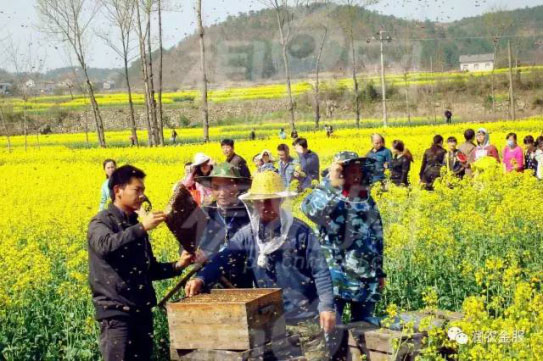
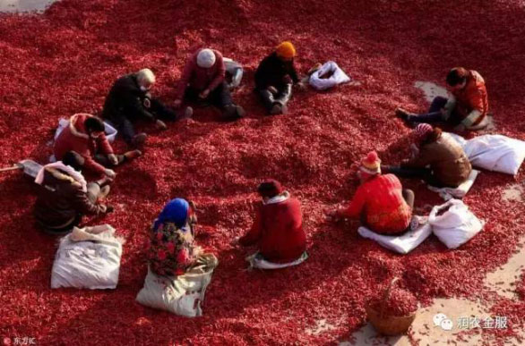

“城市套路深，我要回农村”润农金服引领农村金融精准扶贫
如今，很多农民朋友选择进城打工，是生活所迫。但慢慢随着国家政策的变化，这已经不是最佳的选择了.
反而使农村失去了核心劳动力，一个个空村慢慢出现。留守老人和孩子成了一大社会问题。当政府、社会开始重视，农村的机会便开始显现了，如果你是有远见的人，就应该发现，现在的农村蕴藏着巨大的商机。
当别人开始行动的时候，你还停留在想的阶段，担心干什么，担心没有钱干，更担心不会干，好要面临有产销到哪的问题。
现在有这样一个农村金融机构是开启了农民智慧的钥匙，做到了精准扶贫！润农金服，致力于三农（农业、农村、农民）金融服务，为农业产业链提供金融服务。截止到2016年11月，业务覆盖山西、河南、山东等省份，签约农户近万户，签约种植面积近10万亩，签约贷款金额8000万。
在2016年10月底成立润农金融惠农网点数十家，预计在2016年12月底成立润农金融惠民网点200个。计划在2017年底成立润农金服惠农点3000个。
辣椒种植项目案例：
2016年底，在国家压缩玉米种植面积的导向之下，润农金服经过在种植领域的深入调研与前期试点后，确定在河北、山西两地与农户合作种植辣椒。以往每亩地种玉米的纯收入只有500元左右，而种辣椒却能达到3000元以上。之前农户对种辣椒并不熟悉，也不敢尝试，但有了润农金服一条龙的种植服务与引导，已经有几百个村的上万户农民签订了合作协议。
润农金服做到了农业的精准扶贫，同时获得了当地政府的的肯定和大力支持，我们更坚持做好习主席的“一带一路”政策！让更多的农民朋友扎根农村，能够在农业的天地里大展拳脚！
当前，中国的农村，严格的说，也就是县域的概念，有2070个县（市），他们占国土面积的95%，聚集着近3/4的人口。县域的生活状态就是中国的国情现实。
谈论中国的现代化，城市里鳞次栉比的大楼没有意义。从任何一个中心城市，以50公里的距离放射，都会看到繁荣都市和落后农村的差距，这就是中国距离现代化的路程。实现中国的现代化，关键在农村。